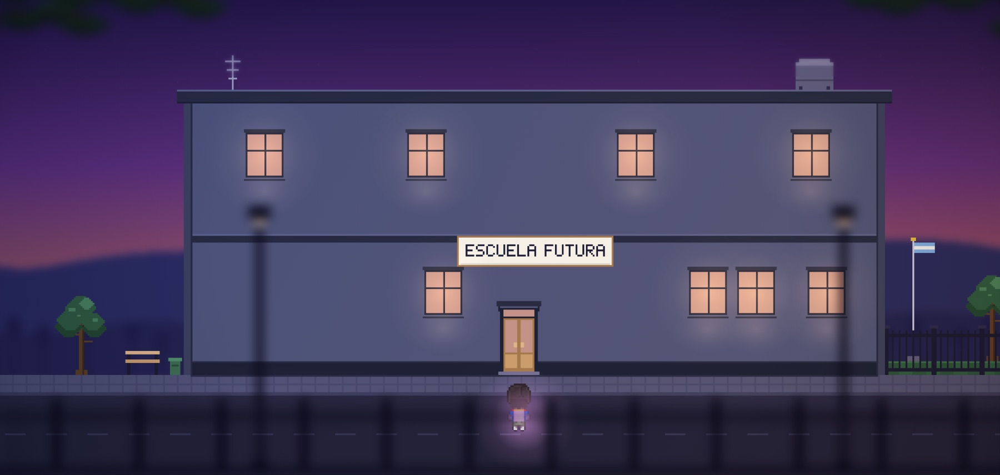
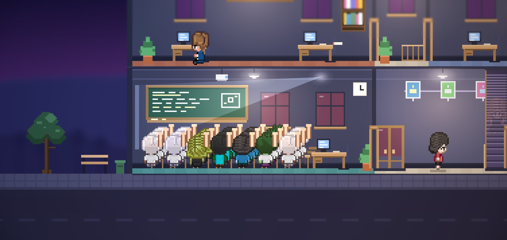

Lo que contamos en Innova Educa 21
Institución Agéntica
Cuando la IA deja de responder y empieza a actuar, la pregunta ya no es qué hacen los estudiantes con ella. Es cómo trabaja la institución que los forma.
Por Greyla Alvarez y Alfredo Edye · Universidad Siglo 21, Córdoba, 5 de noviembre de 2026 · 8 minutos de lectura

La idea, en una frase
No se puede formar personas para trabajar con agentes desde una institución que no trabaja con agentes.
Una sola carrera
En marzo de 2022, Sofía empieza la facultad. Eligió la carrera como la elegimos todos: con un plan de estudios que alguien diseñó pensando en el mundo en el que ella se iba a recibir. Ocho meses después, en plena época de parciales, aparece ChatGPT. Nadie en la facultad sabía muy bien qué hacer con eso. Ella tampoco.
- 2022Pregunta. La IA le responde.
- 2024Copiloto. La IA le sugiere qué escribir.
- 2026Agente. La IA recibe un objetivo y lo ejecuta.
Este año, antes de recibirse, Sofía va a su primera entrevista de trabajo. Le preguntan:
“¿Cómo trabajás con agentes? Contanos una tarea que le hayas delegado a uno. ¿Qué le pediste? ¿Qué revisaste antes de usar lo que trajo?”
Es la pregunta para la que nadie, en toda su carrera, la preparó. Y no es inventada: así se entrevista en 2026. Lo que se mide no es si alguien sabe usar una herramienta, sino su criterio. Microsoft lo llamó agent boss: cada persona va a dirigir agentes. En su medición de este año, las dos habilidades humanas que más ganan valor son controlar la calidad de lo que produce la IA (50 %) y el pensamiento crítico (46 %).
Por primera vez, una carrera dura más que la tecnología para la que fue diseñada. En educación siempre pasó un poco; lo nuevo es la velocidad. Hoy el cambio pasa adentro de una misma cursada. Y no le pasa solo a Sofía: nos pasa a quienes estamos del otro lado del escritorio.
Microsoft, Work Trend Index (mayo de 2026), 20.000 trabajadores que usan IA. Metaview, guía para entrevistar sobre delegación a agentes (2026).
Casi todas usan IA. Pocas decidieron cómo.
- #31
- Argentina en el ranking global de habilidades para el futuro: primera de América Latina, con 74,0 puntos.
- 87 %
- de las instituciones de la región usa IA en al menos un área.
- 26 %
- tiene una estrategia formal de IA.
- 30 %
- de los estudiantes dice que su institución está a la altura.
La buena noticia es argentina: el país está primero en la región en el índice de QS. Pero su puntaje más bajo está en la alineación entre lo que formamos y lo que el trabajo pide. No en talento ni en tecnología: en la distancia entre el aula y el trabajo, que es exactamente la historia de Sofía.
En la charla le pedimos a la sala que levantara la mano si su institución tenía una política de uso de IA para estudiantes. Subieron casi todas. Después preguntamos por una política para cómo trabaja con IA la propia institución: la secretaría, el área de alumnos, la gestión. Bajaron casi todas. Primero regulamos al otro; decidir cómo trabajamos nosotros es lo difícil.

Los datos dicen lo mismo: la IA ya entró. El 92 % de los estudiantes y el 79 % de los docentes la usan. Como resumió el Digital Education Council, lo que falta no es voluntad de los educadores: es claridad institucional.
QS World Future Skills Index 2027 (julio de 2026); QS no publica la cifra de esa dimensión por país. UNESCO IESALC, 200 instituciones de 19 países (septiembre de 2026). Digital Education Council, LATAM Survey 2026, más de 30.000 respuestas.
De preguntar a delegar
Durante dos años le hicimos preguntas a la IA. Un agente recibe otra cosa: un objetivo.
Preguntar
“¿Qué estudiantes necesitan apoyo?”
Vuelve una lista. Lo que hacer con cada nombre sigue siendo tuyo.
Delegar
“Antes del parcial de Biología, identificá qué estudiantes de primer año están en riesgo y proponé qué hacemos con cada uno.”
Vuelve un plan con razones y con los datos a la vista, que espera tu decisión. Y lo que aprobás, lo ejecuta.
La distancia entre esas dos consignas es la competencia que tenemos que formar, en estudiantes y en nosotros: saber dar un buen objetivo y saber juzgar lo que vuelve.
Qué es un agente, sin tecnicismos
Un software con cinco características. Pensalo como un ayudante alumno nuevo en la cátedra: tiene ganas, es rápido, aprende cuando lo corregís, y todavía no sabe dónde queda la fotocopiadora.
- 01Rol
- Un puesto en el equipo, con una responsabilidad clara.
- 02Habilidades
- Sabe hacer cosas que le enseñó la institución: detectar un riesgo de abandono, revisar una inscripción.
- 03Herramientas
- Acceso a los datos que su puesto necesita. Ni más ni menos.
- 04Memoria
- Recuerda lo que hizo y lo que decidieron las personas.
- 05Actúa
- Trabaja en pasos, habla con otros agentes y propone. Lo que afecta a una persona, lo aprueba una persona.
Escuela Futura
A nosotros también nos costaba imaginar cómo funciona esto de verdad. Por eso construimos una escuela ficticia, con datos sintéticos, donde seis agentes trabajan junto a las personas, y la hicimos correr en vivo durante la charla. Tiene una regla de la casa: nada con consecuencias para una persona sale sin que una persona lo apruebe.
- Coordinación recibe el objetivo, reparte el trabajo y arma la propuesta.
- Tutor sabe en qué temas se traban los estudiantes.
- Advisor lleva inscripciones, correlativas, pagos y trámites.
- Bienestar detecta señales de riesgo de abandono.
- Admisiones sigue a los ingresantes en su primer año.
- Academia propone programas a partir de lo que piden la escuela y su entorno.
Lo que se vio en vivo
-

El objetivo y el reparto
Desde Dirección se escribe la consigna del parcial de Biología. Coordinación delega en Bienestar (asistencia), Tutor (notas y temas) y Advisor (pagos y trámites). Cada uno consulta sus datos.
-

Una propuesta con los datos a la vista
De 24 estudiantes, una está en riesgo: Martina R. Fue a 5 de las 22 clases desde el 18/8 y tiene cuotas vencidas que no la dejan rendir. Advisor suma a Admisiones, que recuerda lo que dijo al inscribirse: “Quiero seguir Medicina”. La propuesta llega en menos de un minuto, con su propio riesgo de equivocarse y con lo que los datos no dicen.
-

Una persona decide
Dirección aprueba el plan de pagos y la práctica guiada, y se queda con la llamada: “La llamada la hago yo”. Lo aprobado queda en el Tablero; cerrar una tarea, solo lo hace una persona.
Delegar con criterio
“A esta la llamo yo.”
Hay una estudiante que no necesita un plan: necesita que alguien la llame. Lo nuevo no es que la IA conteste mejor, sino que el trabajo se organiza distinto: objetivo, delegación, conversación entre agentes, propuesta y una decisión humana. Esa última parte no se delega.
- Qué delegamos
- Buscar patrones, cruzar datos, preparar propuestas, responder lo repetitivo.
- Qué nos reservamos
- El vínculo, el propósito y las decisiones que afectan a una persona.
- Qué revisamos
- Los datos que usó, por qué priorizó y dónde se equivocó.
Sobre los permisos, las instituciones ya saben más de lo que creen: lo que un agente puede tocar se mide con la misma vara que hoy se usa para los legajos y los sistemas de pago. Y los límites conviene decirlos de frente: los agentes no responden siempre igual, dependen de la calidad de los datos (si hay tres planillas de inscriptos, las van a encontrar a las tres) y cuestan. Es una decisión de diseño institucional, no una compra.
En el aula, la pregunta deja de ser cómo evitamos que usen IA y pasa a ser qué consigna vale la pena pedir ahora.
En Bitlogic lo vivimos primero: cuando la IA empezó a escribir código, la deuda que nos dejó no fue de código, fue de comprensión. Por eso no creemos que el contenido importe menos. Para dar un buen objetivo y juzgar lo que vuelve, hay que saber mucho.
En diciembre, Sofía se recibe. Nadie le dio una materia de agentes; eso se aprende en una semana. Aprendió de una institución que trabaja con agentes, con criterio: vio qué delegó, qué se reservó y qué revisó. Como con los hijos, se enseña con el ejemplo.
Sofía no existe; la inventamos. Pero si trabajás en educación, conocés a muchas Sofías: entraron con un mundo y van a salir a otro.
Una institución agéntica delega con criterio. Y puede enseñarlo porque lo practica.